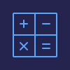

CSS Reference
CSS
CSS(Cascading Style Sheets)은 HTML을 꾸며주는 스타일시트입니다.
- HTML은 웹 사이트의 몸체를 담당한다면, CSS는 옷과 액세사리 같은 꾸미는 역할을 담당합니다.
CSS Selector
| Tag |
Type |
Description |
Version |
| . |
.class {color:#fff;} |
클래스 선택자 |
CSS1 |
| # |
#id {color:#fff;} |
아이디 선택자 |
CSS1 |
| * |
* {margin:0; padding:0;} |
전체 선택자 |
CSS2 |
| element |
div {background:#fff;} |
요소 선택자 |
CSS1 |
| element,element |
div, p {background:#fff;} |
그룹 선택자 |
CSS1 |
| element > element |
div > p {background:#fff;} |
자식 선택자 |
CSS1 |
| element + element |
div + p {background:#fff;} |
형제 선택자 |
CSS2 |
| [attribute] |
div[class] {color: #fff;} |
속성 선택자 |
CSS2 |
| [attribute=value] |
div[class="white"] {color: #fff;} |
속성 선택자 |
CSS2 |
| [attribute~=value] |
div[class~="white"] {color: #fff;} |
속성 선택자(value값이 포함한 요소를 선택) |
CSS2 |
| [attribute^=value] |
div[class^="white"] {color: #fff;} |
속성 선택자(value값으로 시작하는 요소를 선택) |
CSS3 |
| [attribute*=value] |
div[class*="white"] {color: #fff;} |
속성 선택자(value 값을 포함한 요소를 선택) |
CSS3 |
| [attribute$=value] |
div[class$="white"] {color: #fff;} |
속성 선택자(value값으로 끝나는 요소를 선택) |
CSS3 |
요소를 선택하여 속성을 줄 수 있습니다.
- id 선택자
- 하나의 태그만 식별하기 위한 선택자입니다.
- 하나의 태그에 하나만 사용할 수 있습니다.
- “#”으로 표시합니다.
- class 선택자
- 여러 개의 태그를 식별하기 위한 선택자입니다.
- 하나의 태그에 여러개를 사용할 수 있습니다.
- “.”으로 표시합니다.
CSS 색상 표현 방법
CSS 색상표현은 4가지 방법이 있습니다.
- HEX :16진수 표기법 (#RRGGBB)
- HEX 색상은 가장 널리 쓰이는 색상 표현 방식입니다.
- rgb와 rgba 표기법 (red값, green값, blue값)
- hsl와 hsla 표기법 (hue값, saturation값, lightness값)
- 키워드 (red, green, black, blue.......)
CSS 선언 방법
CSS 선언하는 방법은 3가지 있습니다.
- 외부 스타일 시트(External Style Sheet) : 외부 CSS 파일과 연결
- 내부 스타일 시트(Internal Style Sheet) : head 태그 안에 정의
- 인라인 스타일 시트(Inline Style Sheet) : 해당 태그 안에 정의
float으로 인한 영역 깨짐(height:0) 방지법
float을 사용하면 height 값을 0으로 인식합니다.
- 깨지는 영역에 똑같이 float을 사용합니다.(X)
- float의 성질을 차단하는 clear:both를 사용합니다.
- float을 사용한 부모박스한테 overflow: hidden을 사용합니다.(O)
- float을 사용한 부모태그한테 clearfix를 사용합니다.
.clearfix {*zoom: 1;}
.clearfix:before, .clearfix:after {display: table; content: ''; line-height: 0;}
.clearfix:after {clear:both;}
절대주소와 상대주소
이미지 표현 방법
웹 문서에서 이미지를 표현 할 수 있는 방법은 3가지가 있습니다.
- <img> 태그를 통해서 넣는 방법 : 이미지에 의미가 있을 때

- CSS background를 통해서 넣는 방법 : 이미지가 의미가 없을 때
- 이미지 스프라이트 기법을 통해서 넣는 방법
이미지 스프라이트
이미지 스프라이트(image sprite)란 여러 개의 이미지를 하나의 이미지로 합쳐서 한번에 다운받는 시스템입니다.
- 여러번의 서버 요청을 한 번으로 줄일 수 있습니다.
- 이미지 수정이나 관리가 간편합니다.
- 웹 접근성을 준수하기 위해서는 IR효과를 설정해야 합니다.
IR 기법
IR 기법은 이미지 대체텍스트 제공을 위한 CSS기법입니다.
position:relative를 사용해야 하는 경우
- position: aboslute의 기준점이 필요할 때
- z-index를 사용해야 하는 경우 포지션 값이 없으면 reletive를 사용하여 z-index의 값을 인식시킬 수 있습니다.
- 요소의 위치를 유지한채 left, top, right, bottom의 위치 값을 사용하고 싶을 때
CSS Description
width
요소의 가로 값을 정의합니다.
height
요소의 세로 값을 정의합니다.
background
요소의 배경을 정의합니다.
- background-attachment : 배경이미지의 고정 여부를 설정합니다.
- background-blend-mode : 배경을 혼합했을 때의 상태를 설정합니다.
- background-clip : 배경을 혼합했을 때의 상태를 설정합니다.
- background-color : 백그라운드 색상을 설정합니다.
- background-image : 백그라운드 이미지를 설정합니다.
- background-origin : 백그라운드 이미지 영역 속성을 설정합니다.
- background-position : 백그라운드 이미지 위치를 설정합니다.
- background-repeat : 백그라운드 이미지 반복 여부를 설정합니다.
- background-size : 백그라운 사이즈를 설정합니다.
background-color
백그라운드 색상을 정의합니다.
- background-color: #fff - 백그라운 색을 설정합니다.
- background-color: transparent - 백그라운 색을 투명하게 설정합니다.
background-image
백그라운드 이미지 속성을 정의합니다.
- background-image: none; 백그라운드 이미지 속성을 설정하지 않습니다.
- background-image: url("이미지 경로") : 백그라운드 이미지를 설정합니다.
background-position
백그라운드 이미지 위치를 설정합니다.
- background-position : left top
- background-position : left center
- background-position : left bottom
- background-position : right top
- background-position : right center
- background-position : right bottom
- background-position : center top
- background-position : cneter center
- background-position : center bottom
- background-position : 10px 40px
- background-position : 10% 5%
- background-position : 10% 5%, 10px 40px, center top
background-repeat
백그라운드 이미지 반복 여부를 설정합니다.
- background-repeat : repeat(기본값) - 이미지를 X축 Y축으로 반복 설정합니다.
- background-repeat : repeat-x - 이미지를 X축으로 반복 설정합니다.
- background-repeat : repeat-y - 이미지를 Y축으로 반복 설정합니다.
- background-repeat : no-repeat - 이미지를 반복하지 않고, 하나만 나오게 합니다.
text-align
텍스트의 정렬 방식을 정의합니다.
- text-align : left - 텍스트의 정렬을 왼쪽을 설정합니다.
- text-align : right - 텍스트의 정렬을 오른쪽을 설정합니다.
- text-align : center - 텍스트의 정렬을 가운데로 설정합니다.
- text-align : justify - 텍스트의 정렬을 양쪽으로 설정합니다.
text-transform
텍스트를 대문자 또는 소문자로 변경합니다.
- text-transform : none - 속성을 적용하지 않습니다.
- text-transform : capitalize - 각 단어의 첫글자만 대문자로 변경합니다.
- text-transform : uppercase - 모든 텍스트를 대분자로 변경합니다.
- text-transform : lowercase - 모든 텍스트를 소문자로 변경합니다.
margin
박스 요소의 바깥쪽 여백을 설정합니다.
- margin-top: 10px - 요소의 위쪽 바깥쪽 여백을 설정합니다.
- margin-right: 11px - 요소의 오른쪽 바깥쪽 여백을 설정합니다.
- margin-bottom: 12px - 요소의 아래쪽 바깥쪽 여백을 설정합니다.
- margin-left: 13px; - 요소의 왼쪽 바깥쪽 여백을 설정합니다.
- margin: 10px 11px 12px 13px - 위쪽/오른쪽/아래쪽/왼쪽
- margin: 10px 11px 12px - 위쪽10px/왼쪽,오른쪽11px/아래쪽12px
- margin: 10px 11px - 위쪽,아래쪽10px/왼쪽,오른쪽11px
- margin: 10px - 위쪽,오른쪽,아래쪽,왼쪽10px
- margin: auto - 기본값, 자동값
- margin: 0 auto - 블록구조를 가운데 정렬
padding
박스 요소의 안쪽 여백을 설정합니다.
- padding-top: 10px - 요소의 위쪽 안쪽 여백을 설정합니다.
- padding-right: 11px - 요소의 오른쪽 안쪽 여백을 설정합니다.
- padding-bottom: 12px - 요소의 아래쪽 안쪽 여백을 설정합니다.
- padding-left: 13px; - 요소의 왼쪽 안쪽 여백을 설정합니다.
- padding: 10px 11px 12px 13px - 위쪽/오른쪽/아래쪽/왼쪽
- padding: 10px 11px 12px - 위쪽10px/왼쪽,오른쪽11px/아래쪽12px
- padding: 10px 11px - 위쪽,아래쪽10px/왼쪽,오른쪽11px
- padding: 10px - 위쪽,오른쪽,아래쪽,왼쪽10px
font-size
폰트 사이즈 속성을 설정합니다.
- font-size : xx-small
- font-size : x-small
- font-size : small
- font-size : xx-large
- font-size : x-large
- font-size : large
- font-size : smaller
- font-size : larger
- font-size : medium
- font-size: 14px;(length)
- font-size: 20%;(percentage)
line-height
문장과 문장 사이의 간격을 설정합니다.
- line-height : normal
- line-height : 3(number)
- line-height : 18px(length)
- line-height : 10%(percentage)
- line-height = height : 한 줄일 때 중간으로 오는 효과
position
요소의 위치를 설정합니다.
- position : static(기본값)
- position : absolute - 요소의 위치를 절대값을 설정합니다.
- position : relative
- position: absolute의 기준점이 필요할 때 사용합니다.
- 요소의 위치를 유지한채로 left, top, right, bottom의 위치 값을 사용하고 싶을 때
- z-index를 사용하고 싶은데 포지션이 없으면 relative를 사용하여 z-index 값을 인식시킬 수 있습니다.
- position : fixed - 요소의 위치를 고정으로 설정합니다.
border
테두리 속성을 설정합니다.
- border-width : 테두리 두께 속성을 설정합니다.
- border-style : 테두리 스타일 속성을 설정합니다.
- border-color : 테두리 색 속성을 설정합니다.
- border-image : 테두리 이미지 속성을 설정합니다.
- border-radius : 테두리 굴곡을 설정합니다.
border-width
테두리 두께 속성을 설정합니다.
- border-top-width
- border-right-width
- border-bottom-width
- border-left-width
- border-width: 10px 11px 12px 13px;
- border-width: 10px 11px 12px
- border-width: 10px 11px
- border-width: 10px
- border-width: thin(1px)
- border-width: medium(3px)
- border-width: thick(5px)
border-style
테두리 스타일 속성을 설정합니다.
- border-style : none;
- border-style : hidden;
- border-style : dotted
- border-style : dashed
- border-style : solid
- border-style : double
- border-style : groove
- border-style : ridge
- border-style : inset
- border-style : outset
border-color
테두리 색상을 설정합니다.
- border-color : 색상코드
- border-color : transparent
border-image*
테두리 이미지 설정합니다.
- border-image-source
- border-image-slice
- border-image-width
- border-image-ouset
- border-image-repeat
border-radius*
테두리 굴곡 설정합니다.
- border-top-radius
- border-right-radius
- border-bottom-radius
- border-left-radius
list-style
목록 스타일 속성을 설정합니다.
- list-style-image : 목록 마커의 이미지를 설정합니다.
- list-style-position : 목록 마커의 위치를 설정합니다.
- list-style-type : 목록 마커의 유형을 설정합니다.
- list-style-type : disc;
- list-style-type : circle;
- list-style-type : square;
- list-style-type : upper-alpha;
- list-style-type : upper-latin;
- list-style-type : upper-roman;
- list-style-type : lower-alpha;
- list-style-type : lower-latin;
- list-style-type : lower-roman;
- list-style-type : decimal-leading-zero
letter-spacing
글자 사이의 간격을 설정합니다.
- letter-spacing : normal(기본값)
- letter-spacing : length
word-spacing
단어 사이의 간격을 설정합니다.
- word-spacing : normal(기본값)
- word-spacing : length
overflow
cursor
text-overflow
white-space
::after
::before
box-sizing
display
box-sizing: border-box;
border-radius